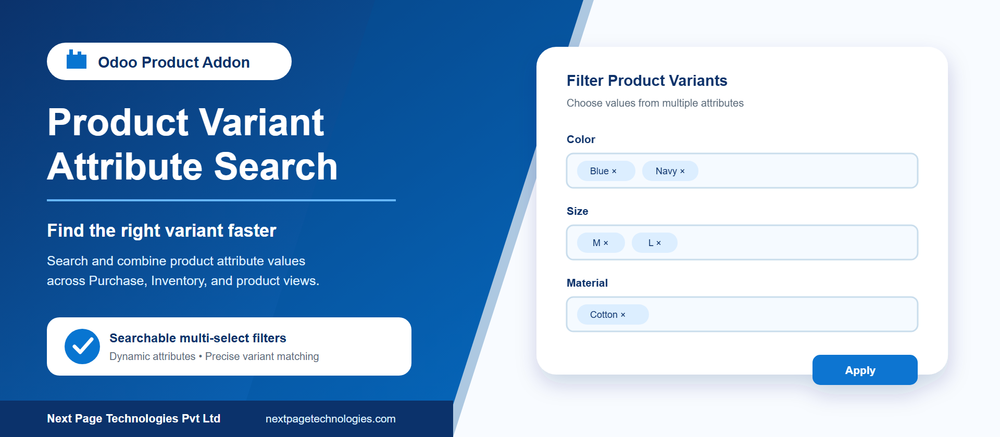
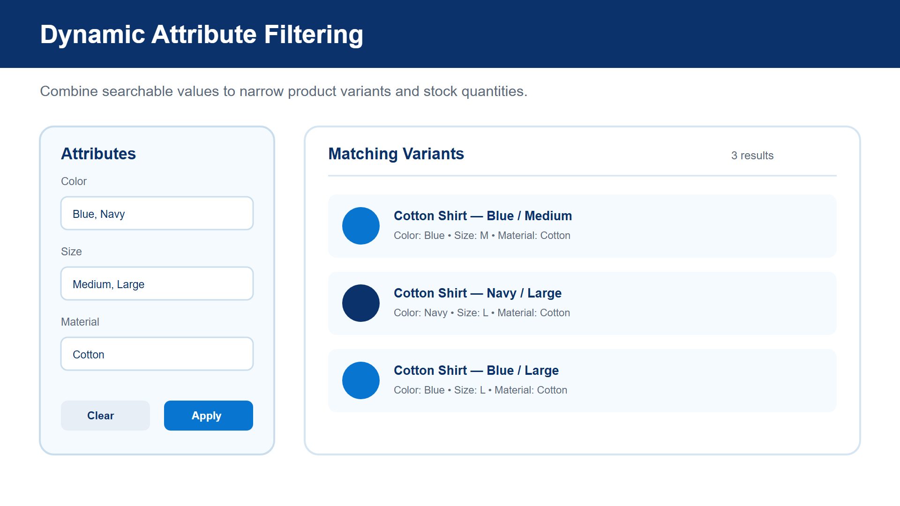
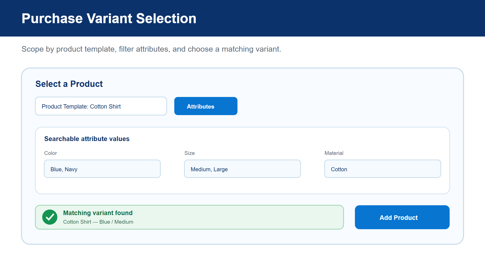
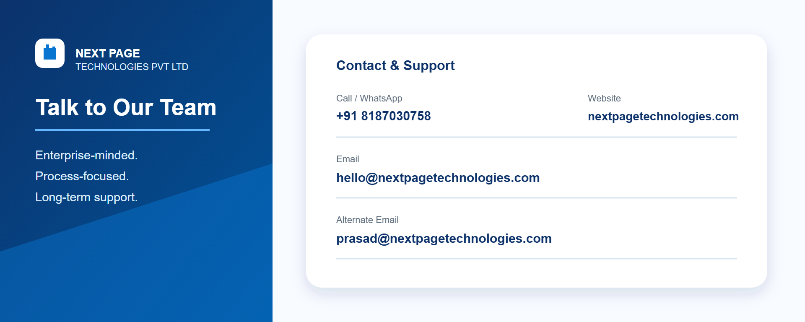

Find Odoo product variants faster with dynamic, searchable attribute filters across product, Purchase, and Inventory workflows. Multi-select filtering helps users narrow large variant catalogs and choose matching products with fewer manual searches.
The addon reads configured product attributes and values dynamically, then presents them as searchable multi-select controls. Selected values within one attribute are treated as alternatives, while selections across different attributes are combined to progressively narrow the matching variants.
Load available attributes and values from the current product catalog without maintaining a separate filter list.
Search long value lists and select multiple values for each attribute before applying the filter.
Filter purchasable variants in the Search More dialog and optionally scope the available attributes by product template.
Use responsive searchable selectors to choose attribute values and resolve a matching variant on Purchase Order lines.
Use the attribute panel in stock quant and supported product/stock reporting views.
Purchase filters respect shared products and products belonging to the active companies.
Install the addon and refresh the Odoo web client. The filters use existing product templates, variants, attributes, and values, so no separate filter configuration is required. Users need the normal access rights for the corresponding Product, Purchase, Inventory, or Manufacturing screens.
Select searchable attribute values from a dedicated panel and apply them to product variants or stock quantities. This is useful when catalogs contain many combinations of size, color, material, capacity, or other configured attributes.

Use product-template scoping and attribute filters in Purchase product selection, or choose searchable values in the responsive product configurator. The addon resolves a variant that matches the selected attribute groups.

Contact Next Page Technologies Pvt Ltd for implementation or support assistance.

Next Page Technologies Pvt Ltd
https://nextpagetechnologies.com